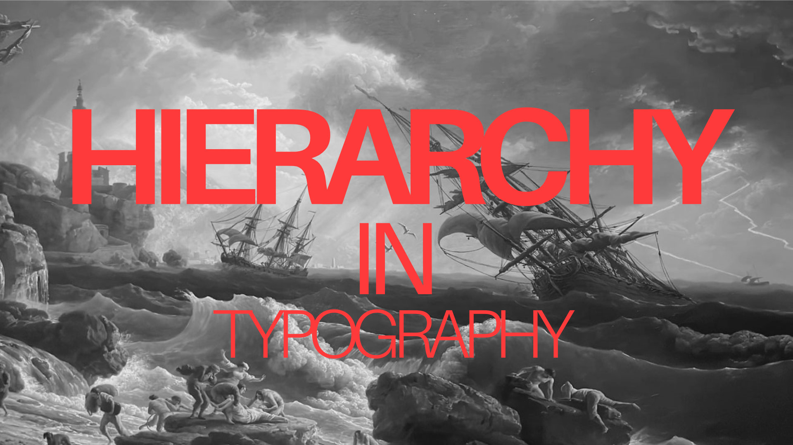
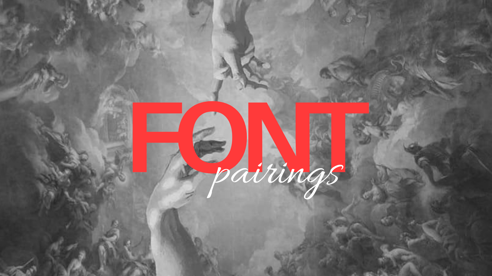
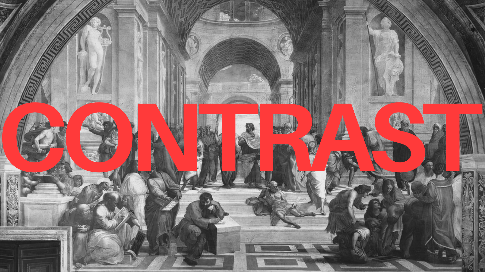
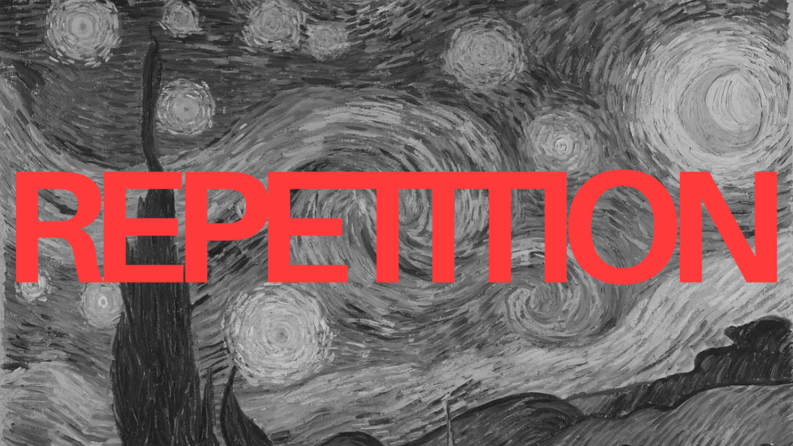
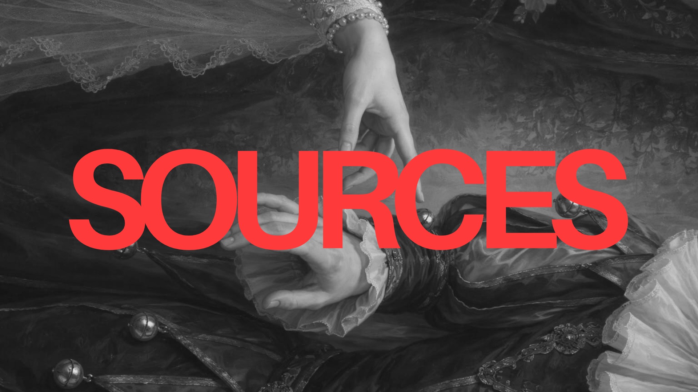

My Design Manifesto is a series of typography, color, and design principles that I have had the pleasure of learning and implementing into my newfound training in web design. These skills and applications are informed by various readings throughout the website, with all sources linked below. Hopefully, this manifesto will provide valuable insight into the principles and considerations to incorporate into your next UX/UI design layout.

Visual hierarchy is a large part of readability and legibility. If nothing is emphasized on a page, nothing looks important. You need to use visual cues to tell people what to pay attention to first, second, third, etc. You can create visual hierarchy through things like scale (the relative size of elements) and color. Typographic hierarchy can be created by using different typefaces, sizes, and font weights, much like the photo above.
Designers have a lot of flexibility when it comes to creating hierarchy, or even dictating what should be a priority on the hierarchical scale. One of the first things to consider is how many levels of hierarchy a design should have. As a general rule, every design should include three levels of hierarchy: heading, subheading, and body text.

Choosing a font pairing can sometimes be difficult. No matter what you’re designing, you should have a main font. For example? This website is entirely based on the neo-grotesque sans-serif typeface Aileron. This font is used primarily in the title or text headline of the website, which means whatever font you choose will also be used in your titles or headlines. It’s meant to stand out and influence the mood of the design. It doesn’t matter what the type of font is, but knowing the first and primary font will help you choose its complementary second.
The best way to choose a good secondary font is to make sure it’s entirely different, yet complementary to your design. For example, I chose the font Allura. It’s an elegant script font with a clean, calligraphic feel. It’s completely different from Aileron. One of the best ways to choose fonts is to choose a pair of opposites. Use a big bold serif for the headline, and a nice traditional serif for the body copy.

Contrast can be achieved through color, shape, size, or similar properties of elements, and refers to the differences between them. The concept of contrast serves two functions. First, it allows you to make elements stand out from one another. For example, the background. A lack of contrast would result in a design that’s a single color, with no other visible elements. That’s not exactly a functional design. Rather, a design where you can see different elements automatically has some level of desirable contrast.
The second function of contrast is accessibility and legibility. Sufficient contrast between elements, especially that of text and background, is vital for creating a design that the audience can read. People with vision impairments can have a difficult time reading text on a screen that is too small or does not have sufficient color contrast.

Repetition refers to using the same or similar elements throughout the design. It’s either in regular or irregular patterns. It’s used to reinforce specific elements while providing a sense of unity and continuity to the design.
A few common elements to repeat can include color, typography, shapes, icons, and spacing. Reusing a primary brand color, or even sticking to the same font families and sizes for different headings and body text. Employ the repetition in random ways, such as using the same icons throughout, the same style in background patterns, or through things such as styling.

Garnier, Charles. Grand Foyer of the Palais Garnier. 1860–75, Paris. Opéra National de Paris.
View SourceVernet, Claude-Joseph. A Shipwreck in Stormy Seas. 1773, oil on canvas. National Gallery, London.
View SourceGiordano, Luca. The Creation of Man. 1684–86, fresco, Palazzo Medici-Riccardi, Florence. Wikimedia Commons.
View SourceRaphael. The School of Athens. 1509–11, fresco, Stanza della Segnatura, Vatican Palace, Vatican City. Vatican Museums.
View SourceVan Gogh, Vincent. The Starry Night. 1889, oil on canvas. Museum of Modern Art, New York.
View SourceBouguereau, William-Adolphe.
Corrigan, Stephanie. “Ultimate Guide to Choosing Colors for Web Design.” Flux Academy.
Read SourceFleck, Renee. “Choosing Colors for Web Design: A Practical UI Color Application Guide.” Dribbble, 19 Dec. 2018.
Read SourceFleck, Renee. “11 Principles of Design (and How to Use Them).” Dribbble.
Read SourceGalvan, Monica. “The Ultimate Guide to Choosing Fonts.” Flux Academy.
Read Source“10 Principles of Good Web Design.” Tilda Education.
Read Source